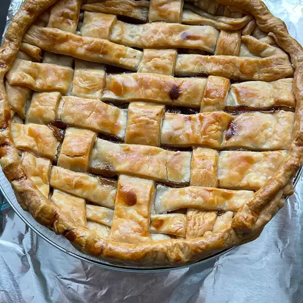

Apple Pie

Description
An apple pie is a fruit pie in which the principal filling ingredient is apples.
Apple pie is often served with whipped cream, ice cream, custard or cheddar cheese.
It is generally double-crusted, with pastry both above and below the filling;
the upper crust may be solid or latticed.
Mock apple pie is a dessert made to taste like an apple pie with no apples required!
That's because the secret ingredients lie in the filling: crackers! Traditionally,
mock apple pie is made with a filling of soda crackers, lemon juice, sugar, a few pats of butter, and cinnamon.
Ingredients
- 1 (14.1 ounce) package pastry for a 9-inch double-crust pie
- ¾ cup white sugar, or more to taste
- 1 teaspoon ground cinnamon
- 6 cups thinly sliced apples
- 1 tablespoon butter
Steps
- Preheat the oven to 450 degrees F (230 degrees C).
- Line a 9-inch pie dish with one pastry crust; set second one aside.
- Combine 3/4 cup sugar and cinnamon in a small bowl. Add more sugar if your apples are tart.
- Layer apple slices in the prepared pie dish, sprinkling each layer with cinnamon-sugar mixture.
- Dot top layer with small pieces of butter. Cover with top crust.
- Bake pie on the lowest rack of the preheated oven for 10 minutes. Reduce oven temperature to 350 degrees F (175 degrees C) and continue baking until golden brown and filling bubbles, 30 to 35 minutes more.
- Serve warm or cold.